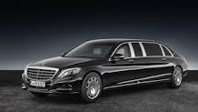
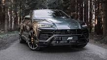

Mercedes Maybach S600 |
|
|  more images |
Новый Mercedes-Maybach – истинное выражение автомобильной роскоши, где элегантная аристократичность, спортивная динамика, изысканный интерьер и абсолютный комфорт сливаются в неповторимое удовольствие от каждой поездки. Импозантный облик, выразительные хромированные элементы кузова, чётко очерченная светодиодная оптика и фирменная надпись «Maybach» на эффектной передней части автомобиля подчёркивают уверенный характер непревзойдённого лидера. |
Lamborghini Urus |
|
|  more images |
Lamborghini Urus — первый кроссовер (SSUV - Super Sport Utility Vehicle) от итальянского производителя автомобилей Lamborghini. Автомобиль был представлен 4 декабря 2017 года на заводе Lamborghini в Сант'Агата-Болоньезе[1]. |